Ciudad Real ofrece una amplia variedad de localizaciones y condiciones favorables para el desarrollo de producciones audiovisuales.
Ciudad Real ofrece una amplia variedad de espacios y escenarios en una ciudad de dimensiones manejables, con patrimonio histórico, arquitectura, museos y diferentes ambientes urbanos.
La variedad de estilos, épocas y ambientes permite recrear diferentes contextos y necesidades de producción en una misma ciudad.
A ello se suma la proximidad de un entorno natural y patrimonial diverso, con localizaciones de interés a pocos kilómetros del núcleo urbano.
La ciudad cuenta con un destacado conjunto histórico-artístico, con edificios y espacios de diferentes épocas y estilos, entre ellos las iglesias de Santiago, la Catedral de Nuestra Señora del Prado y la Iglesia de San Pedro, además del Antiguo Casino, los conventos históricos, el Palacio de la Diputación, el antiguo Hospital de la Misericordia (actual sede del Rectorado de la UCLM) y la fachada del Palacio de Medrano.
A pocos kilómetros de Ciudad Real se encuentra un entorno de gran diversidad paisajística, histórica y cultural, que amplía las posibilidades de localización y permite combinar escenarios urbanos con espacios naturales y patrimoniales.
Entre los principales atractivos se encuentra el Parque Arqueológico de Alarcos-Calatrava, situado a unos diez kilómetros de la capital, con importantes restos de época ibérica y romana y un conjunto formado por el yacimiento de Alarcos y el cercano castillo de Calatrava la Vieja.
La provincia ofrece además una amplia variedad de paisajes, desde lagunas volcánicas y zonas esteparias hasta dehesas, sierras y campos de cultivo. Esta diversidad permite recrear diferentes ambientes y escalas de producción a escasa distancia de la capital.
Incentivos fiscales para rodajes en España - Spain Film Commission
Ciudad Real cuenta con conexión directa mediante alta velocidad con Madrid (50'), Córdoba (60'), Sevilla (1h 40'), Málaga (1h 50'), Valencia (2h 20'), Granada (2h 30'), Alicante (3h 20') y Barcelona (4h 20'), a través de los servicios de Renfe e Iryo.
Por carretera, la provincia dispone de una red de autovías y carreteras nacionales que facilita el acceso a la capital y la conexión con otras localidades y puntos de interés.
A-43 (Autovía del Guadiana) Mérida - Ciudad Real - Valencia
A-41 Ciudad Real - Puertollano
CM-45 (Autovía del IV Centenario) Ciudad Real - Almagro
CM-42 (Autovía de los Viñedos) Toledo - Alcázar de San Juan - Tomelloso
N-401 Ciudad Real - Toledo
N-420 Córdoba - Ciudad Real - Tarragona
N-430 Badajoz - Ciudad Real - Albacete
El clima de Ciudad Real se caracteriza por su baja humedad y por un elevado número de horas de sol a lo largo del año. Los veranos son cálidos y secos, y las precipitaciones son generalmente escasas, condiciones que favorecen la planificación de rodajes en exteriores.
Ciudad Real ofrece un entorno tranquilo y seguro para el desarrollo de rodajes y otras producciones audiovisuales.
Sus dimensiones manejables facilitan el desplazamiento de equipos, la logística y la organización de rodajes en el entorno urbano.
Ministerio del Interior, epdata.es
Ciudad Real Film Office ofrece a las producciones audiovisuales información, orientación y recursos de interés para desarrollar sus proyectos en Ciudad Real.
Su actividad incluye información sobre localizaciones, recursos y procedimientos relacionados con la actividad audiovisual, así como orientación sobre los trámites que puedan resultar necesarios ante las administraciones y entidades competentes.
La Film Office desarrolla esta actividad desde La Casa del Cine y del Audiovisual de Ciudad Real, de forma independiente y en coordinación con las áreas municipales que puedan intervenir en cada caso.
CR Film Office proporciona información y orientación a las producciones audiovisuales sobre recursos, procedimientos y posibilidades de rodaje en Ciudad Real.
Información y orientación sobre los procedimientos relacionados con los permisos y autorizaciones necesarios para un rodaje.
La presentación de solicitudes, la aportación de documentación y la realización de los trámites corresponden a la producción ante el organismo o entidad competente.
Información sobre servicios y recursos municipales que puedan resultar de interés para un rodaje, como ocupación de espacios, uso de edificios municipales, circulación, señalización u otros servicios.
Su disponibilidad y autorización dependerán en cada caso del área u organismo competente y de las condiciones aplicables.
Orientación a las producciones sobre procedimientos, recursos y posibilidades de rodaje en Ciudad Real.
CR Film Office proporciona información y contactos de carácter orientativo, pero no presta servicios de producción, contratación de personal, logística ni organización del rodaje.
Información sobre localizaciones, profesionales, empresas y servicios que puedan resultar de interés para una producción audiovisual.
Los contactos proporcionados tienen carácter orientativo. La producción deberá consultar directamente con cada profesional, empresa o entidad su disponibilidad, tarifas y condiciones y, en su caso, formalizar cualquier contratación.
Recopilación de información sobre producciones cinematográficas y audiovisuales realizadas en Ciudad Real, contribuyendo a la difusión de la actividad audiovisual vinculada al municipio.
Información sobre posibles condiciones, descuentos o ventajas que determinados establecimientos y empresas locales puedan ofrecer a producciones audiovisuales.
Estas condiciones dependerán directamente de cada establecimiento o empresa y deberán consultarse y acordarse con ellos.
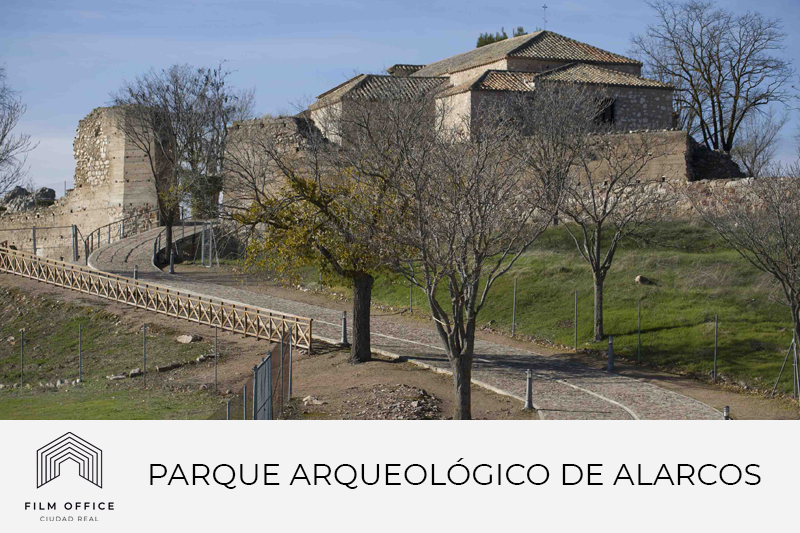
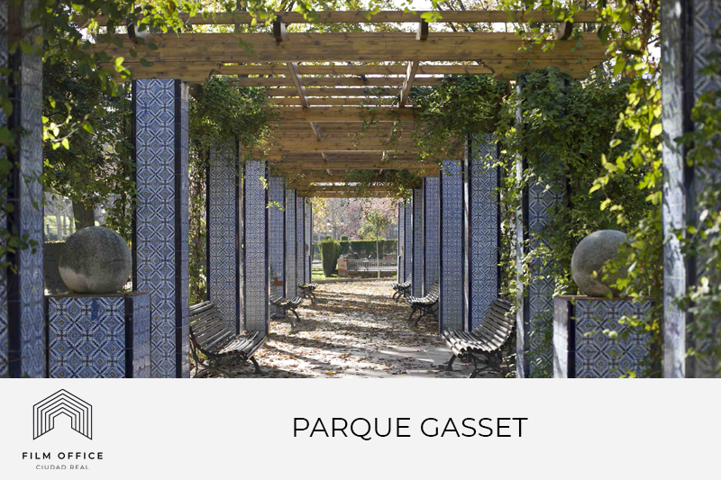
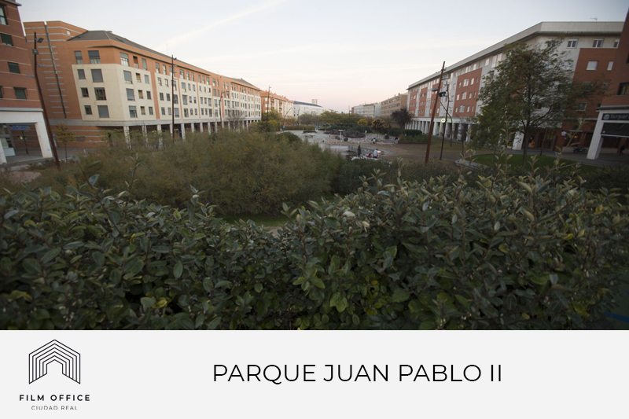
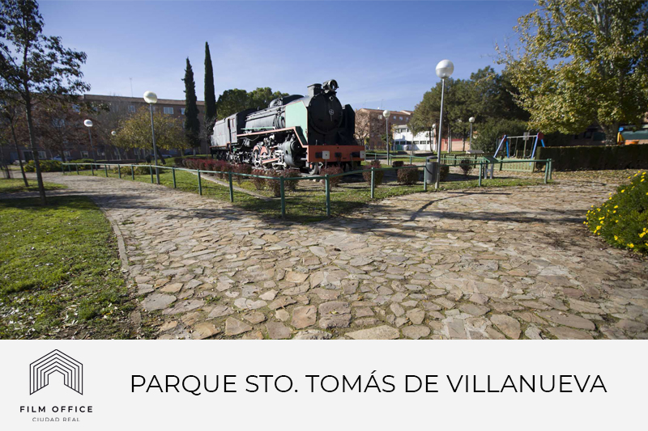
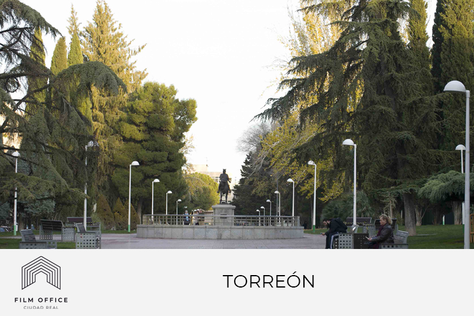
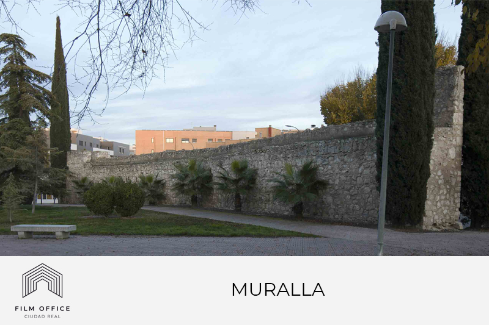
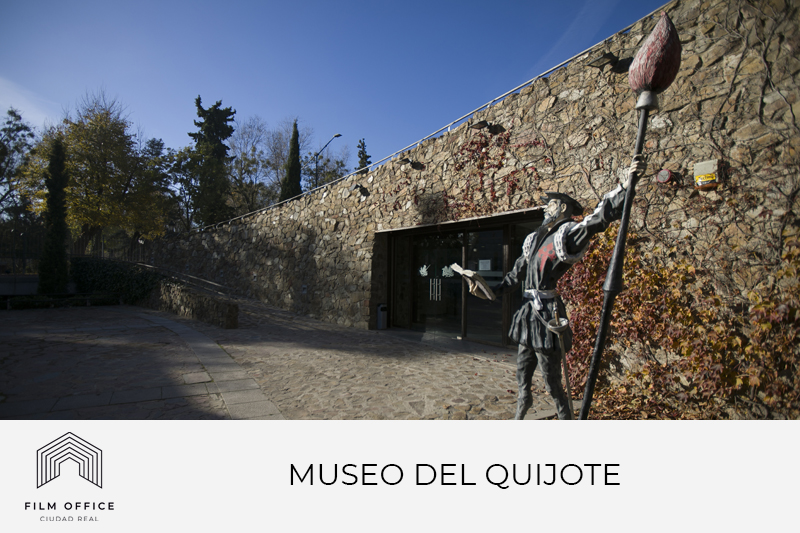
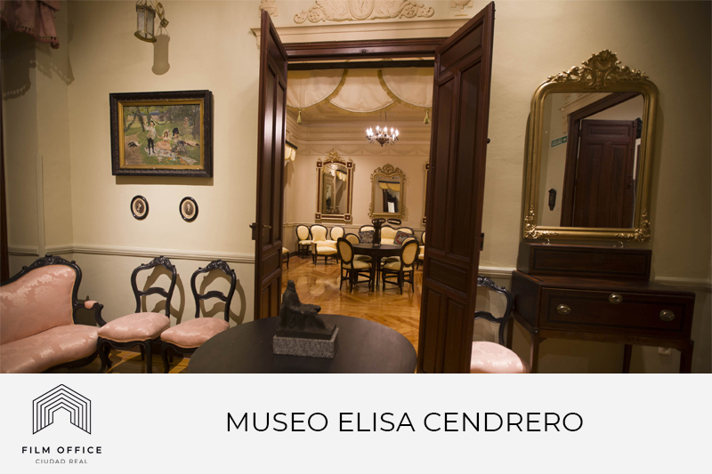
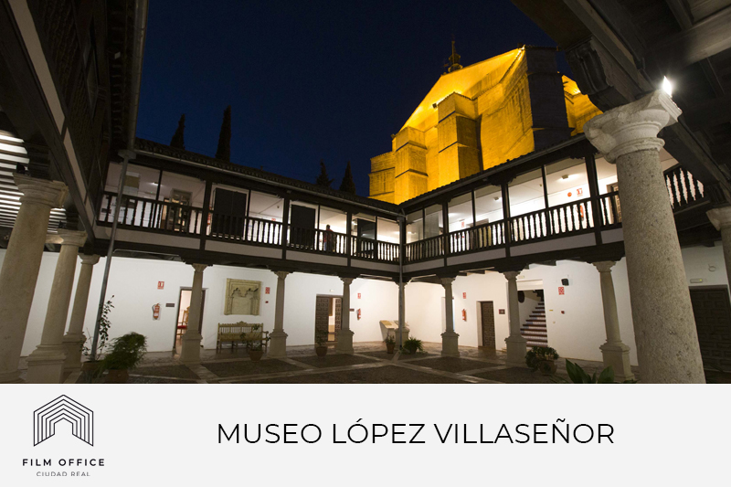
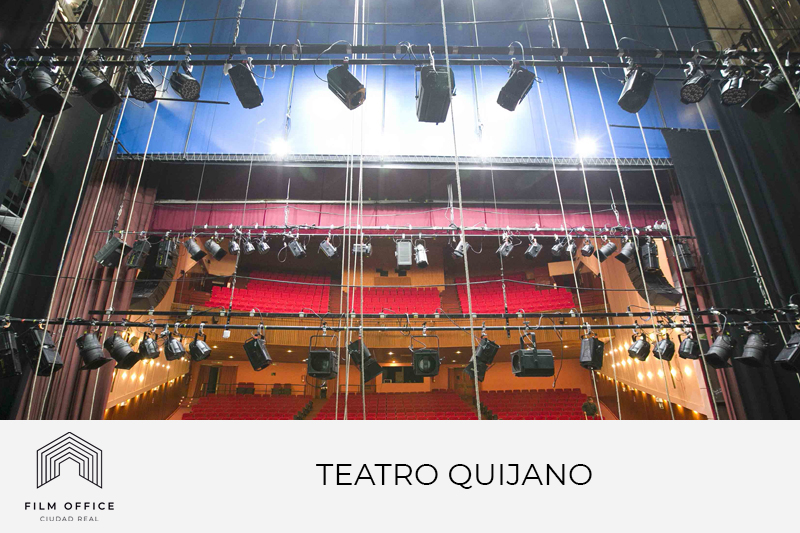
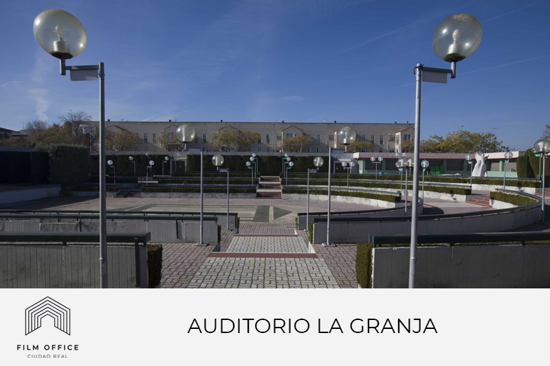
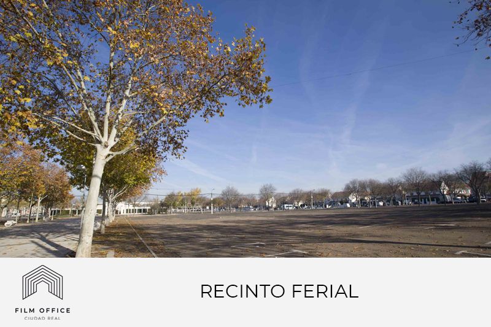
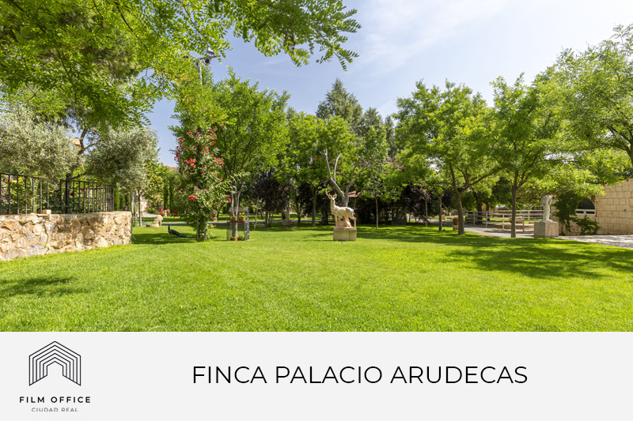
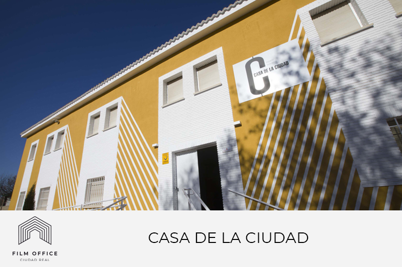
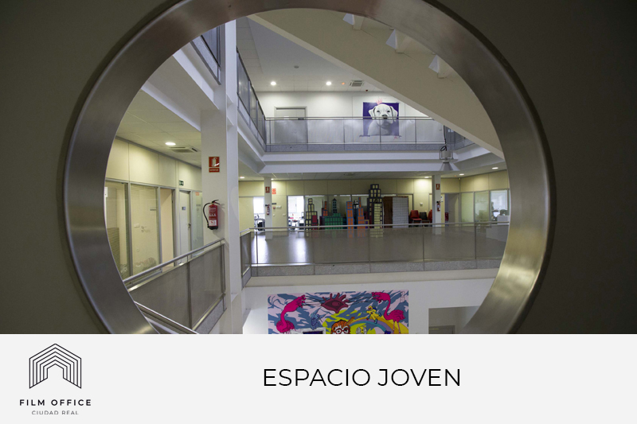
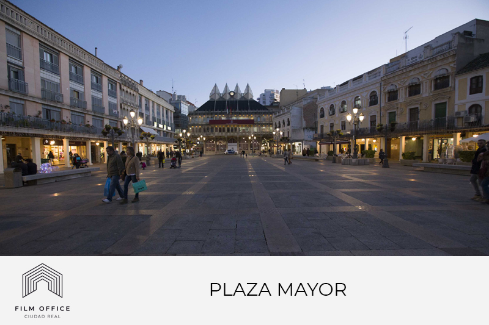
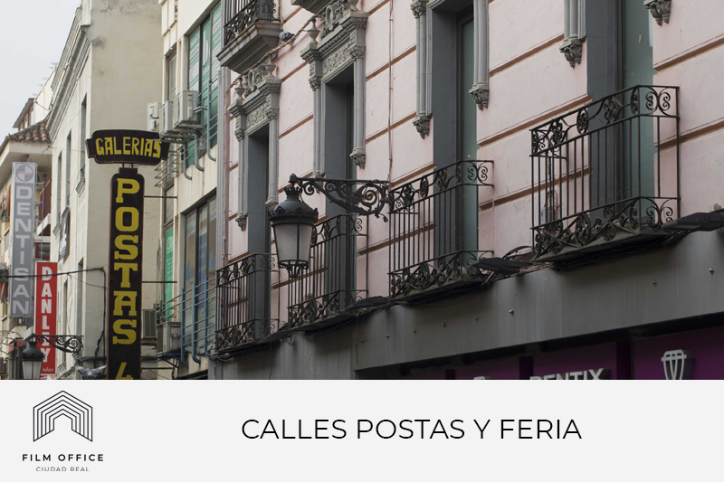
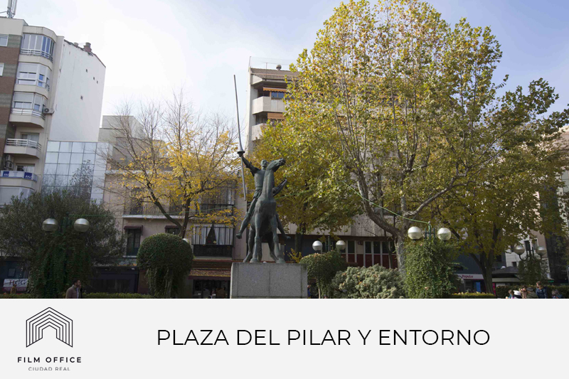
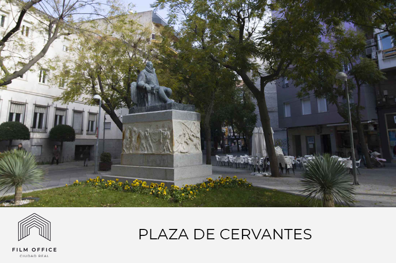
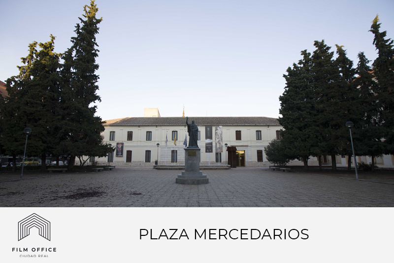
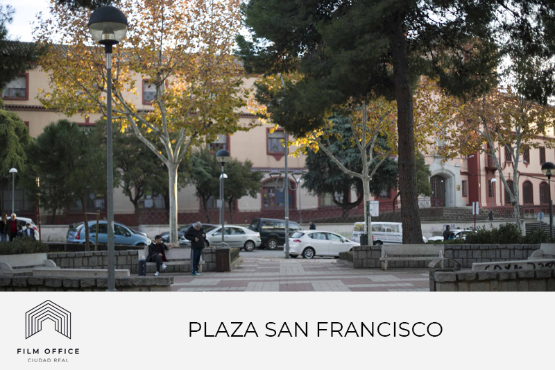
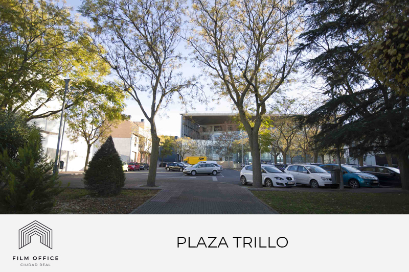
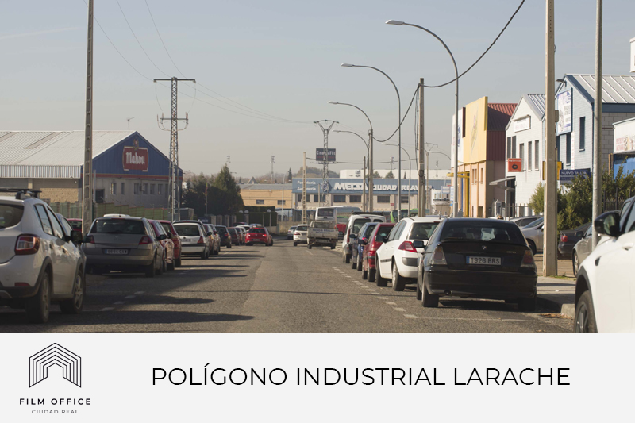
Forma parte del catálogo de profesionales enviándonos tu CV y material (reel / book / videobook) a info@crfilmoffice.com
Participa en el catálogo de localizaciones enviándonos información, fotografías y vídeos de tu espacio a info@crfilmoffice.com
Participa en la Guía Audiovisual enviándonos información sobre obras realizadas en Ciudad Real a info@crfilmoffice.com: ficha de la obra, enlace de visionado, bio y fotografía de dirección, cartel y fotografías del rodaje. Las imágenes deberán ser .jpg, entre 150 y 300 ppp y con un máximo de 1 MB por archivo.
También puedes añadir enlaces a dossier, tráiler, web o redes sociales.
Ver Política de Privacidad
¿Tienes una producción?
- Escríbenos indicando las fechas previstas en el asunto -